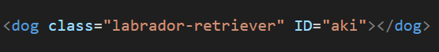

If we want to understand best practices associated with using classes vs. ids we first have to get an idea of what they are. So lets pretend you have a dog called Aki. You found her on the road while biking in Montenegro next to a rubbish bin. A small, skinny and malnutritional Labrador retriever puppy, about 4 weeks old. So in this scenario, the class of Aki is a Labrador retriever and the id is Aki.
The class defines some characteristics and aspects of what Aki looks like which is shared by all Labrador retriever. Think, short dense coat, a broad skull, thick muscular body, droopy triangular ears and a “otter” tail that curves slightly. The class of Labrador retriever can be put on many puppies and you get an idea of what they look like. However if you want some specifics, you will have to look at the id. In this case, the id is Aki. By looking into the id Aki, you will find that Aki is a girl, she was found in Montenegro, she is very sweet and cuddly and her favourite toy is a bungee cord nicknamed the big snake. So there you were confronted with a choice, leave Aki to starve to death or take her with you? If it was any other Labrador retriever, who knows but because Aki is unique you take her.